01 研究问题：复杂建筑的“到门”为什么难
已知建筑位置和登记门，仍不等于外部步行网络能连续接到门。
主图是原始地图上下文，不是计算成功图；没有可信路宽/路缘信息就不绘制。
 原始地图上下文图 · original
原始地图上下文图 · original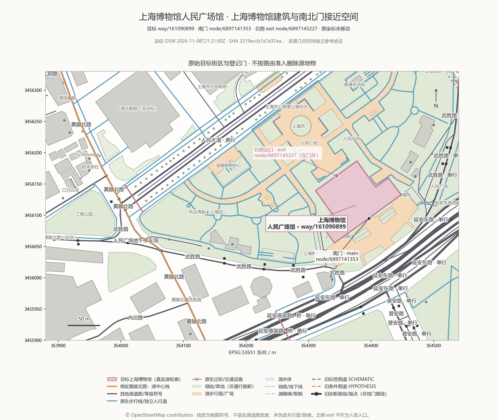
原始地图上下文图 · original数据摘要 · CSV · 图注 · 来源与SHA
02 初始真实失败：南门有登记，但线网未接通
旧 R4 的南门存在于地图，原生线网却没有入口图节点。
旧R4 B1/B2未产生新边，不能作为已成功开放面内通行的结果。约55米是南门这一旧场景，不是北出口7.95米。
 算法叠加图 · original_svg_rasterized
算法叠加图 · original_svg_rasterized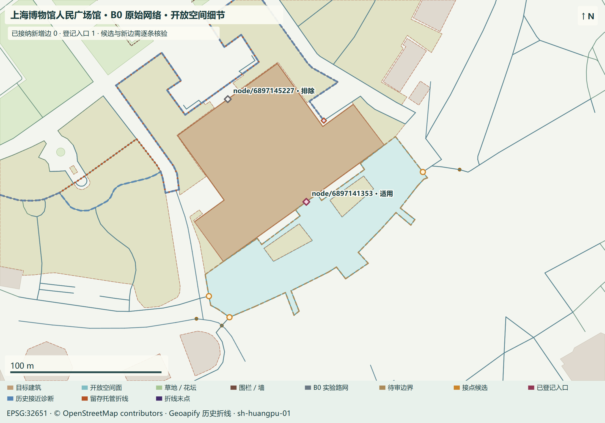
算法叠加图 · original_svg_rasterized数据摘要 · CSV · 图注 · 来源与SHA
03 步行线不是全部：广场面是另一类空间输入
南广场已标为步行面，但“画得出面”和“能在面内寻路”是两回事。
这是输入表示解释图，没有新求路；公园、草地和已标步行面不是同一语义。
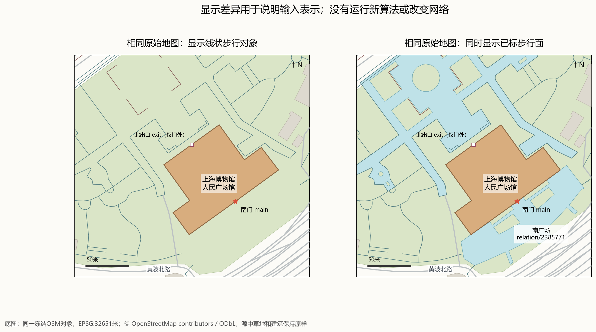
原始地图上下文对照 · redrawn_from_frozen_results_no_solver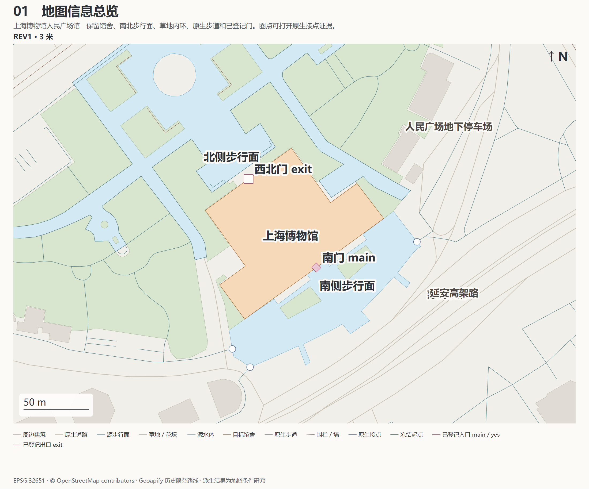
原始地图上下文对照 · original_svg_rasterized数据摘要 · CSV · 图注 · 来源与SHA
04 第一版保守策略：先在步行面边缘寻路
R4-REV1 在已标步行面内派生边缘网络，并保留内环和门前端口检查。
谨慎的是计算约束，不是现场可靠性认证。门前约0.70米端口有单独身份，不混作原生线。
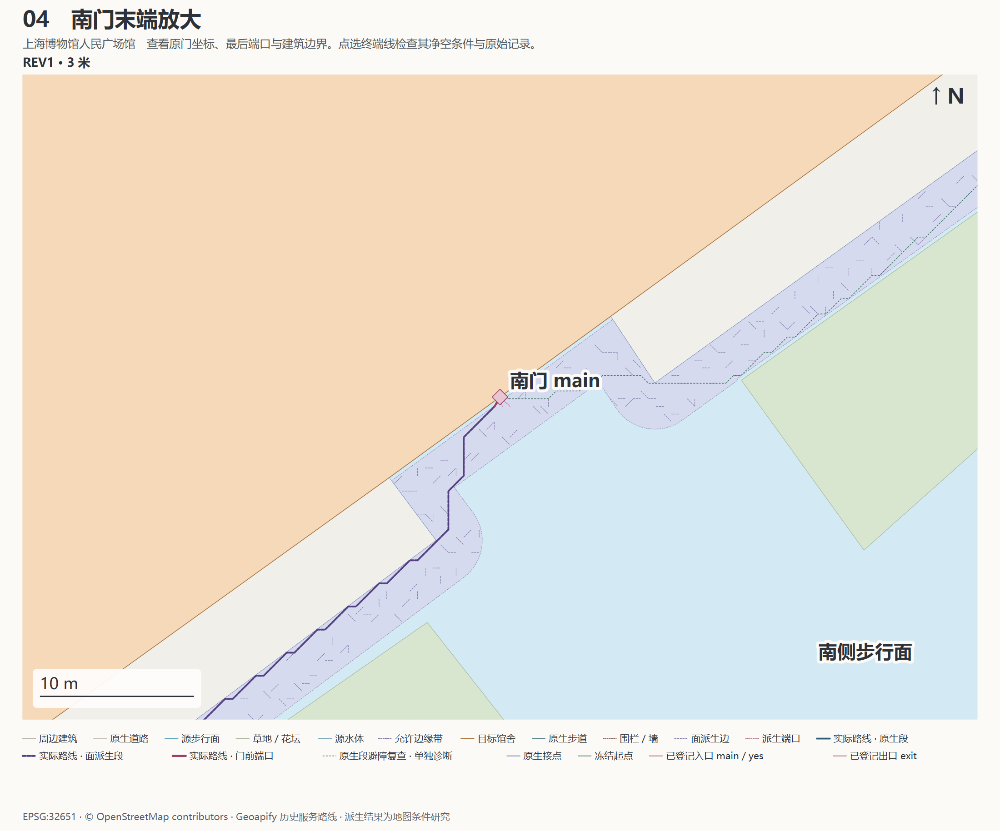
机制成果图 · original_svg_rasterized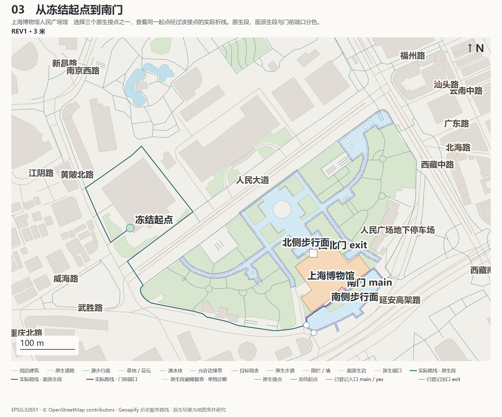
机制成果图 · original_svg_rasterized数据摘要 · CSV · 图注 · 来源与SHA
05 早期未到南门：可证实的结果与解释缺口
能确认早期南门未接通；不能确认“只恢复北侧”是既有实验事实。
该事件的拟定因果叙事尚无充分证据；图仅作补充。
事件5因果叙事不宜直接使用；请看NARRATIVE_EVIDENCE_GAP.md。旧R4已记录南广场，REV1同时处理南北。
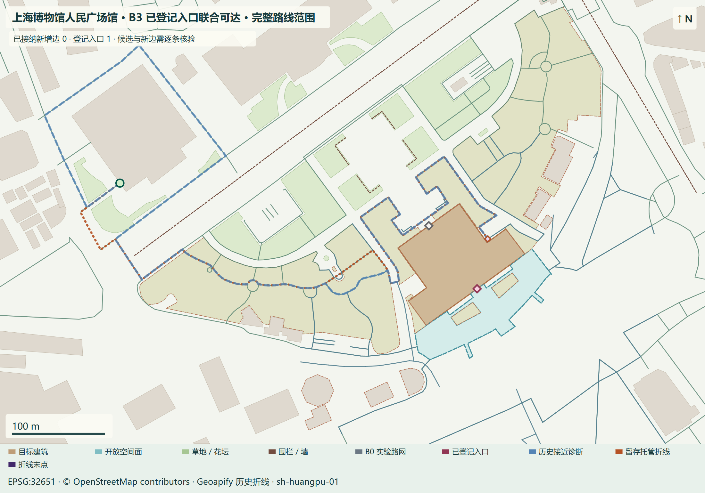
结果对照图／叙事核对 · original_svg_rasterized 结果对照图／叙事核对 · original_svg_rasterized
结果对照图／叙事核对 · original_svg_rasterized数据摘要 · CSV · 图注 · 来源与SHA
06 南广场参与计算后：南门条件接通
在 R4-REV1 中，南广场派生边和门前端口实际参加路线，终点到原南门残差为零。
三个试走接点中只有2个通过当前平面检查；剩余1个前缀碰围栏。不把3/3几何连接当作3/3合法通路，也不称已证实现实入馆。
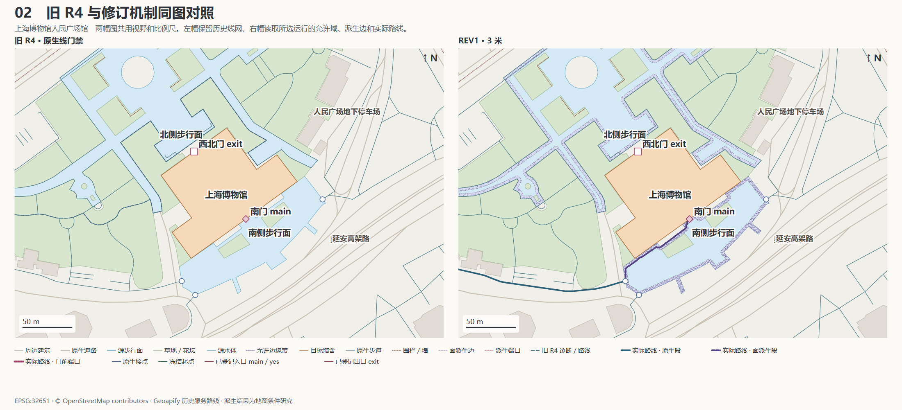
结果对照图 · original_svg_rasterized 结果对照图 · original_svg_rasterized
结果对照图 · original_svg_rasterized数据摘要 · CSV · 图注 · 来源与SHA
07 草地背景不能抹掉已有步道
WALKABILITY-R2 恢复原生有效步道后，同一北侧接点路线减少约71.72米。
1237.81→1166.10米到同一北侧路网接点，仍没跨过门前7.95米。71.72由未舍入原值相减得到。
 结果对照图 · original_svg_rasterized
结果对照图 · original_svg_rasterized 结果对照图 · original_svg_rasterized
结果对照图 · original_svg_rasterized数据摘要 · CSV · 图注 · 来源与SHA
08 北出口7.95米：条件接入不等于通行证明
N1和N2均补成条件路线；N2没有在本例增加同层或通行证据。
N2约31.80平方米是当时围原线产生的受约束域；不能冒充后来的独立区域恢复。N2派生段与假设段是重合身份，不重复加长度。exit不能用于入馆。
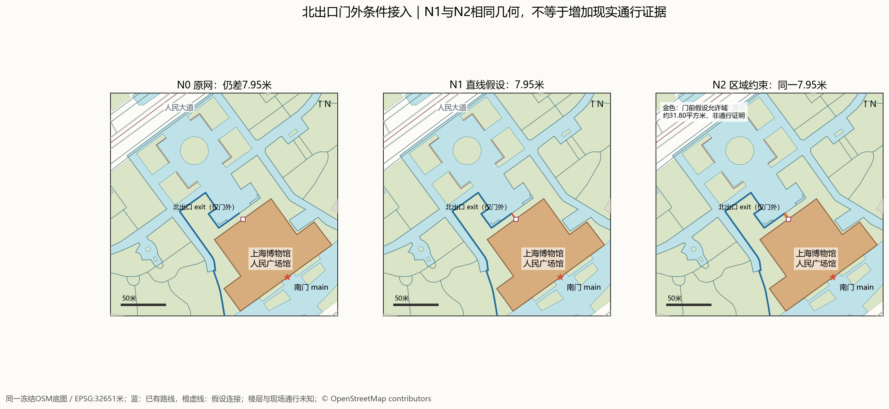
结果对照图 · redrawn_from_frozen_results_no_solver 结果对照图 · redrawn_from_frozen_results_no_solver
结果对照图 · redrawn_from_frozen_results_no_solver数据摘要 · CSV · 图注 · 来源与SHA
09 从边缘绕行到完整合法步行面
同源、同起终点与约束下，完整面路线可减少表示方式造成的绕行。
331.65→299.53是F0；北出口F1为331.92→300.78米且代价不同。883.48→682.44是原日志相似演示，不是截图唯一请求精确复算。仅有限图/可见图条件内的最短，不是现实全局最短。
 结果对照图 · original
结果对照图 · original 结果对照图 · original
结果对照图 · original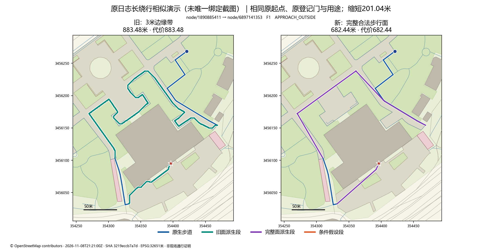
结果对照图 · original数据摘要 · CSV · 图注 · 来源与SHA
10 局部机制改善，不保证业务路线收益
新增面即使接入了图，也可能更贵、处于其他分量，或没有当前可用接口。
3/8→5/8属于局部机制端点，不是四业务任务；F0/F1为四任务×两种成本。不能把82个面或接口记录当82个独立建筑。
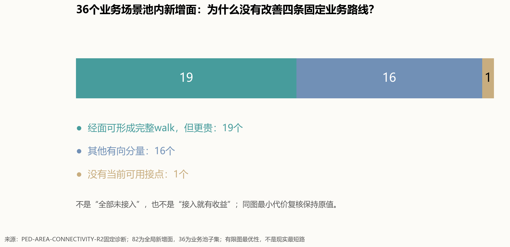
定量机制总结图 · redrawn_from_frozen_results_no_solver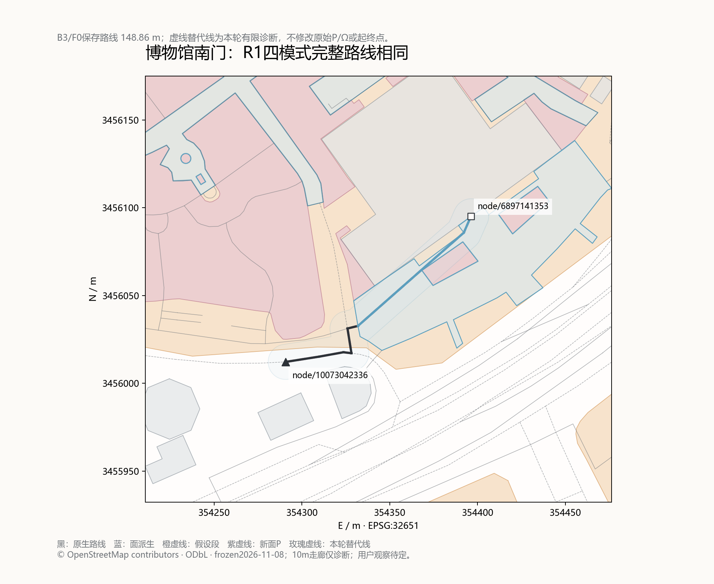
定量机制总结图 · original数据摘要 · CSV · 图注 · 来源与SHA
11 当前阶段与下一阶段
当前OSM末段规划线以规则、空间表示与典型场景原型为主，多场景独立验证仍待开展。
“尚无正式训练泛化主线”仅限当前OSM规则/几何路线，旧NYC关系学习模型已训练过。最新补充核验仍没有现场真值；动态实验适配器不等于已部署实时系统。
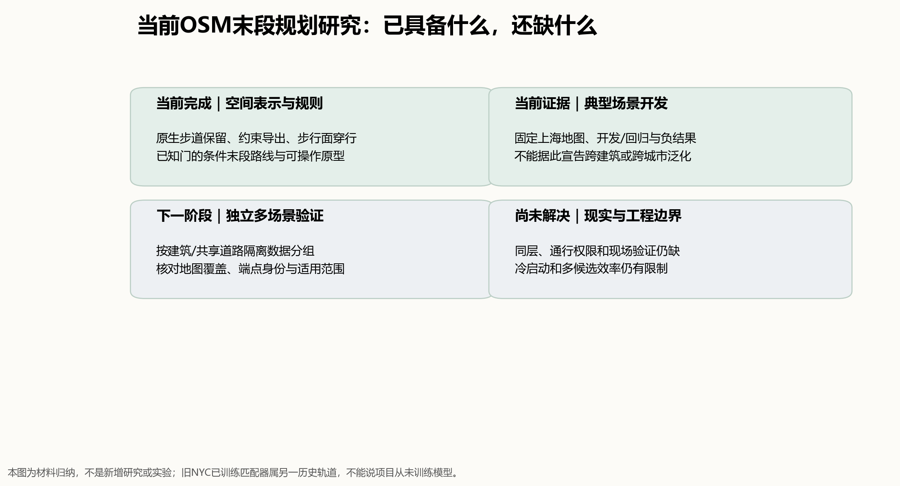
机制解释图 · redrawn_from_frozen_results_no_solver数据摘要 · CSV · 图注 · 来源与SHA
12 阶段推进链与证据边界
阶段推进来自空间表示和实现修复；每一步都有适用范围，未形成普遍到达证明。
当前材料没有新的样本、模型、路由或训练；地图通路、推断假设、用户验收和现场事实继续分开。
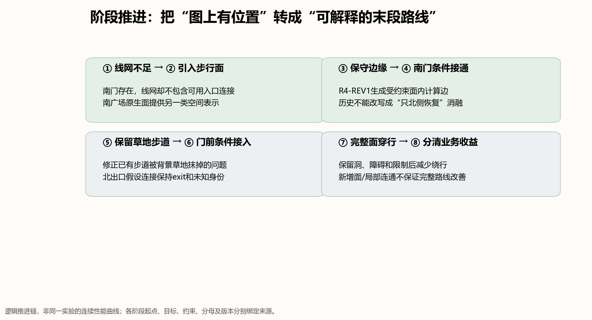
机制解释图 · redrawn_from_frozen_results_no_solver数据摘要 · CSV · 图注 · 来源与SHA